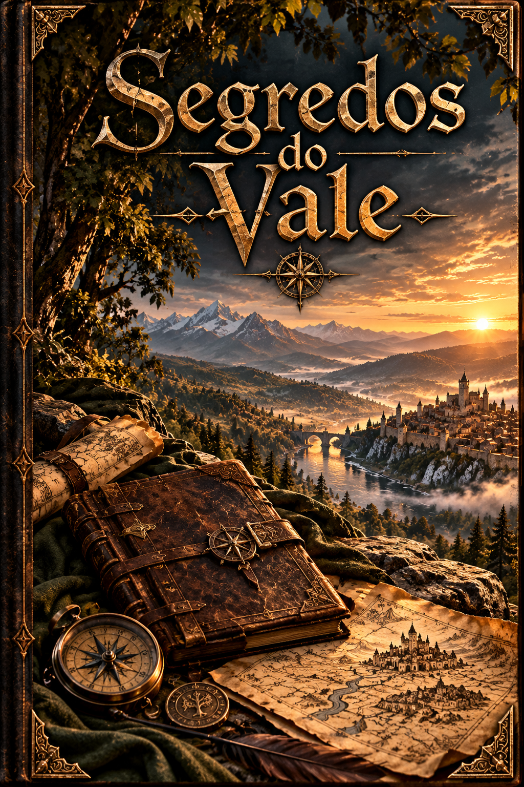
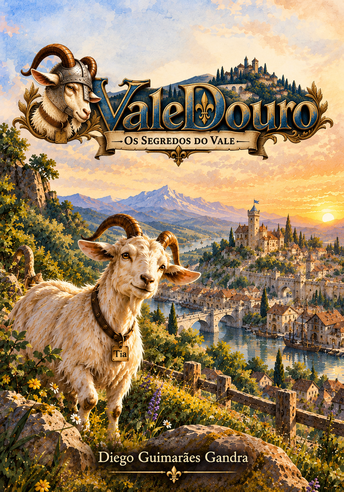

VALEDOURO · SÉRIE DE MINI-HISTÓRIAS
Os Segredos do Vale
Nem todas as histórias do Vale cabem nos livros principais.
ValeDouro é habitado por personagens que atravessam grandes acontecimentos, mas também por aqueles que aparecem por alguns instantes, deixam uma lembrança, despertam uma pergunta ou simplesmente continuam suas vidas quando a narrativa principal segue adiante.
Os Segredos do Vale nasce para contar essas outras histórias: pequenas narrativas que ampliam o universo sem precisar ocupar o centro dos romances principais.
POR TRÁS DA SÉRIE
Todo personagem pode esconder uma história.
Os livros principais acompanham acontecimentos que transformam ValeDouro, Kratóvia e as pessoas envolvidas em sua história. Mas um universo não é formado apenas por aquilo que acontece no centro da narrativa.
Há encontros que duram poucas páginas. Personagens que parecem secundários. Pequenos mistérios, lembranças, afetos e acontecimentos que existem à margem das grandes jornadas — e que nem por isso deixam de merecer ser contados.
Os Segredos do Vale abre espaço justamente para essas narrativas. Cada livrinho pode acompanhar um personagem, um episódio ou uma memória diferente, permitindo visitar outros cantos do mesmo universo sem transformar essas histórias em capítulos obrigatórios da série principal.
Porque, em ValeDouro, até os personagens mais improváveis têm suas próprias histórias.
OS SEGREDOS DO VALE
Conheça as histórias.
Conheça aquelas histórias que não estão escritas nos livros principais. Muitos dos personagens têm algo próprio para contar — até os mais improváveis deles.


